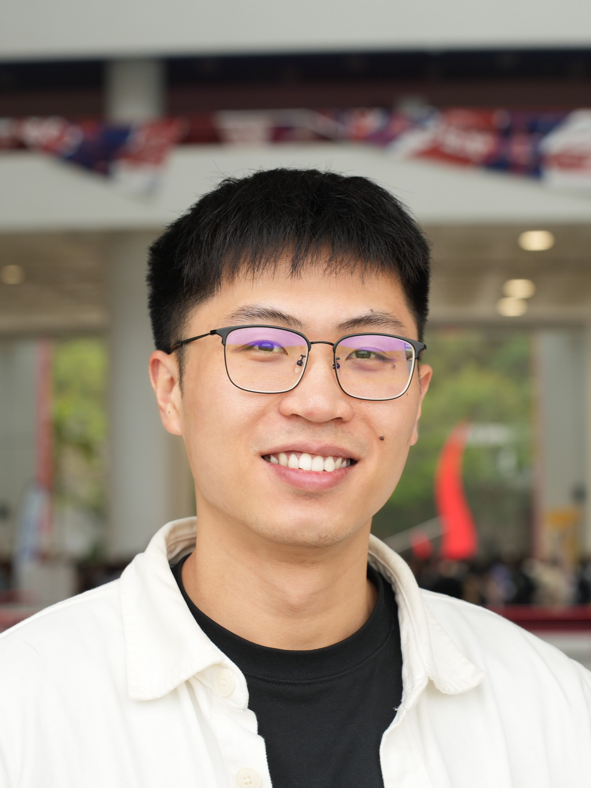

|
 |
Postdoctoral Fellow
The Hong Kong University of Science and Technology
Visiting Postdoctoral Fellow
University of California, Berkeley
Contact Info
Rm4007B, Cheng Yu Tung Bldg,
Clear Water Bay, Sai Kung, Hong Kong
zlaiaa@connect.ust.hk
|
Bio
I am currently a visiting postdoctoral fellow at UC Berkeley, working with Prof. Kameshwar Poolla. I obtained a Ph.D. degree in civil engineering from HKUST in 2025, under the supervision of Prof. Sen Li, and a B.Eng. degree in automation from Tongji University in 2020. I was also a visiting student at UC Berkeley in 2024. I am a recipient of the RedBird Academic Excellence Award from HKUST (2022, 2024), and was recognized as an Outstanding Graduate of the Shanghai Municipality.
Research Interests
Theory: network modeling, optimization, game theory
Application: energy and transportation system, smart city, smart grid
|